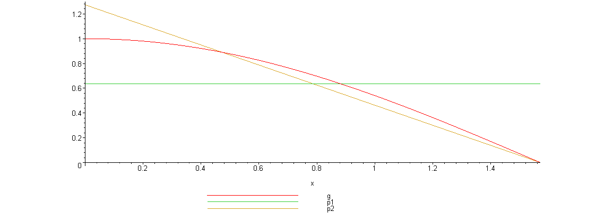
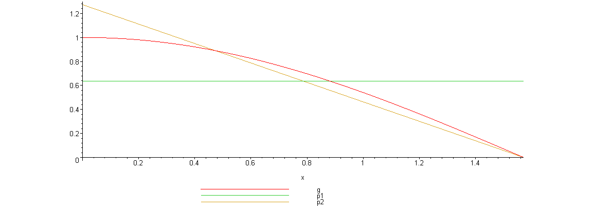

Под метдом Монте-Карло понимается численный метод решения
математических задач при помощи моделирования случайных величин. Представление об истории метода и простейшие примеры его применения можно найти в Википедии.
В самом методе нет ничего сложного. Именно эта простота объясняет популярность данного метода.
Метод имеет две основных особенности. Первая — простая структура вычислительного алгоритма. Вторая — ошибка вычислений, как правило, пропорциональна
 , где
, где  — некоторая постоянная, а
— некоторая постоянная, а  — число испытаний. Ясно, что добиться высокой точности на таком пути невозможно. Поэтому обычно говорят, что метод Монте-Карло особенно эффективен при решении тех задач, в которых результат нужен с небольшой точностью.
— число испытаний. Ясно, что добиться высокой точности на таком пути невозможно. Поэтому обычно говорят, что метод Монте-Карло особенно эффективен при решении тех задач, в которых результат нужен с небольшой точностью.
Однако одну и ту же задачу можно решать различными вариантами метода Монте-Карло, которым отвечают различные значения . Во многих задачах удается значительно увеличить точность, выбрав способ расчета, которому соответствует значительно меньшее значение .
. Во многих задачах удается значительно увеличить точность, выбрав способ расчета, которому соответствует значительно меньшее значение .
Допустим, что нам требуется вычислить какую-то неизвестную величину m. Попытаемся придумать такую случайную величину , чтобы
, чтобы  . Пусть при этом
. Пусть при этом  .
.
Рассмотрим независимых случайных величин  (реализаций), распределения которых совпадают с распределением . Если достаточно велико, то согласно центральной предельной теореме распределение суммы
(реализаций), распределения которых совпадают с распределением . Если достаточно велико, то согласно центральной предельной теореме распределение суммы  будет приблизительно нормальным с параметрами
будет приблизительно нормальным с параметрами  ,
,  .
.
На основе Центральной предельной теоремы (или если хотите предельной теоремы Муавра-Лапласа) не трудно получить соотношение:
=P_left( _left_ _frac{1}{N}_sum_limits_{i}{{{_xi }_{i}}}-m _right__le k_frac{b}{_sqrt{N}} _right)_to 2_Phi (k)-1,)
где) — функция распределения стандартного нормального распределения.
— функция распределения стандартного нормального распределения.
Это — чрезвычайно важное для метода Монте-Карло соотношение. Оно дает и метод расчета , и оценку погрешности.
, и оценку погрешности.
В самом деле, найдем значений случайной величины  . Из указанного соотношения видно, что среднее арифметическое этих значений будет приближенно равно . С вероятностью близкой к
. Из указанного соотношения видно, что среднее арифметическое этих значений будет приближенно равно . С вероятностью близкой к -1)) ошибка такого приближения не превосходит величины
ошибка такого приближения не превосходит величины  . Очевидно, эта ошибка стремится к нулю с ростом .
. Очевидно, эта ошибка стремится к нулю с ростом .
В зависимости от целей последнее соотношение используется по разному:
Как видно из приведенных выше соотношений, точность вычислений зависит от параметра и величины  – среднеквадратичного отклонения случайной величины .
– среднеквадратичного отклонения случайной величины .
В этом пункте хотелось бы указать важность именно второго параметра. Лучше всего это показать на примере. Рассмотрим вычисление определенного интеграла.
Вычисление определенного интеграла эквивалентно вычислению площадей, что дает интуитивно понятный алгоритм вычисления интеграла (см. статью в Википедии). Я рассмотрю более эффективный метод (частный случай формулы для которого, впрочем, тоже есть в статье из Википедии). Однако не все знают, что вместо равномерно распределенной случайной величины в этом методе можно использовать практически любую случайную величину, заданную на том же интервале.
Итак, требуется вычислить определенный интеграл:
dx})
Выберем произвольную случайную величину с плотностью распределения ) , определенной на интервале
, определенной на интервале ) . И рассмотрим случайную величину
. И рассмотрим случайную величину _{{p}_{_xi }}(_xi )) .
.
Математическое ожидание последней случайной величины равно:
![M\zeta =\int\limits_{a}^{b}{[g(x)/{{p}_{\xi }}(x)]{{p}_{\xi }}(x)dx=I}](./1_monte_karlo_habr_files/M_zeta =_int_limits_{a}^{b}{[g(x)_{{p}_{_xi }}(x)]{{p}_{_xi }}(x)dx=I})
Таким образом, получаем:
_approx 0.9973)
Последнее соотношение означает, что если выбрать значений , то при достаточно большом :
}{{{p}_{_xi }}({{_xi }_{i}})}_approx I}) .
.
Таким образом, для вычисления интеграла, можно использовать практически любую случайную величину. Но дисперсия , а вместе с ней и оценка точности, зависит от того какую случайную величину взять для проведения расчетов.
Можно показать, что будет иметь минимальное значение, когда пропорционально |g(x)|. Выбрать такое значение в общем случае очень сложно (сложность эквивалентна сложности решаемой задачи), но руководствоваться этим соображением стоит, т.е. выбирать распределение вероятностей по форме схожее с модулем интегрируемой функции.
Теория, конечно, дело хорошее, но давайте рассмотрим численный пример: ;
;  ;
; =cos(x)) .
.
Вычислим значение интеграла с применением двух различных случайных величин.
В первом случае будем использовать равномерно распределенную случайную величину на [a,b], т.е.=2__pi_) .
.
Во втором случае возьмем случайную величину с линейной плотностью на [a,b], т.е.=_frac{4}{_pi }(1-2x__pi )) .
.
Вот график, указанных функций

Нетрудно видеть, что линейная плотность лучше соответствует функции) .
.
Точное значение интеграла легко вычислить аналитически, оно равно 1.
Результаты одного моделирования при :
:
Для равномерно распределенной случайной величины: .
.
Для случайной величины с линейной плотностью распределения: .
.
В первом случае относительная погрешность более 21%, а во втором 2.35%. Точность в первом случае равна 0.459, а во втором – 0.123.
в первом случае равна 0.459, а во втором – 0.123.
Думаю, данный модельный пример показывает важность выбора случайной величины в методе Монте-Карло. Выбрав, правильную случайную величину, можно получить более высокую точность вычислений, при меньшем числе итераций.
Конечно, так не вычисляют одномерные интегралы, для этого есть более точные квадратурные формулы. Но ситуация меняется при переходе к многомерным интегралам, т.к. квадратурные формулы становятся громоздкими и сложными, а метод Монте-Карло применяется лишь с небольшими изменениями.
Не трудно видеть, что точность вычислений зависит от количества случайных величин включенных в сумму. Причем, для увеличения точности вычислений в 10 раз нужно увеличить в 100 раз.
При решении некоторых задач для получения приемлемой точности оценки требуется брать очень большое число. А учитывая, что метод зачастую работает очень быстро, то реализовать последнее при современных вычислительных возможностях совсем не сложно. И возникает соблазн просто увеличить число .
Если в качестве источника случайности используется некоторое физическое явление (физический датчик случайных чисел), то все работает отлично.
Часто для вычислений по методу Монте-Карло применяют датчики псевдослучайных чисел. Главная особенность таких генераторов – наличие некоторого периода.
Метод Монте-Карло можно использовать при значениях не превышающих (лучше много меньших) период вашего генератора псевдослучайных чисел. Последний факт вытекает из условия независимости случайных величин, используемых при моделировании.
При проведении больших расчетов нужно убедиться, что свойства генератора случайных чисел позволяют вам провести эти расчеты. В стандартных генераторах случайных чисел (в большинстве языков программирования) период чаще всего не превосходит 2 в степени разрядности операционной системы, а то и еще меньше. При использовании таких генераторов нужно быть чрезвычайно осторожным. Лучше изучить рекомендации Д.Кнута, и построить свой генератор, имеющий наперед известный и достаточно большой период.
Популярные лекции по математике 1968. Выпуск 46. Соболь И.М. Метод Монте-Карло. М.: Наука, 1968. — 64 с.
математических задач при помощи моделирования случайных величин. Представление об истории метода и простейшие примеры его применения можно найти в Википедии.
В самом методе нет ничего сложного. Именно эта простота объясняет популярность данного метода.
Метод имеет две основных особенности. Первая — простая структура вычислительного алгоритма. Вторая — ошибка вычислений, как правило, пропорциональна
Однако одну и ту же задачу можно решать различными вариантами метода Монте-Карло, которым отвечают различные значения
Общая схема метода
Допустим, что нам требуется вычислить какую-то неизвестную величину m. Попытаемся придумать такую случайную величину
Рассмотрим
На основе Центральной предельной теоремы (или если хотите предельной теоремы Муавра-Лапласа) не трудно получить соотношение:
где
Это — чрезвычайно важное для метода Монте-Карло соотношение. Оно дает и метод расчета
В самом деле, найдем
В зависимости от целей последнее соотношение используется по разному:
- Если взять k=3, то получим так называемое «правило
»:
- Если требуется конкретный уровень надежности вычислений
,
Точность вычислений
Как видно из приведенных выше соотношений, точность вычислений зависит от параметра
В этом пункте хотелось бы указать важность именно второго параметра
Вычисление определенного интеграла эквивалентно вычислению площадей, что дает интуитивно понятный алгоритм вычисления интеграла (см. статью в Википедии). Я рассмотрю более эффективный метод (частный случай формулы для которого, впрочем, тоже есть в статье из Википедии). Однако не все знают, что вместо равномерно распределенной случайной величины в этом методе можно использовать практически любую случайную величину, заданную на том же интервале.
Итак, требуется вычислить определенный интеграл:
Выберем произвольную случайную величину
Математическое ожидание последней случайной величины равно:
Таким образом, получаем:
Последнее соотношение означает, что если выбрать
Таким образом, для вычисления интеграла, можно использовать практически любую случайную величину
Можно показать, что
Численный пример
Теория, конечно, дело хорошее, но давайте рассмотрим численный пример:
Вычислим значение интеграла с применением двух различных случайных величин.
В первом случае будем использовать равномерно распределенную случайную величину на [a,b], т.е.
Во втором случае возьмем случайную величину с линейной плотностью на [a,b], т.е.
Вот график, указанных функций

Нетрудно видеть, что линейная плотность лучше соответствует функции
Код программы модельного примера в математическом пакете Maple
Файл с данной программой можно взять тут
restart;
with(Statistics):
with(plots):
#исходные функции
g:=x->cos(x):
a:=0:
b:=Pi/2:
N:=10000:
#плотности распределений
p1:=x->piecewise(x>=a and x<b,1/(b-a)):
p2:=x->piecewise(x>=a and x<b,4/Pi-8*x/Pi^2):
#графики
plot([g(x),p1(x),p2(x)],x=a..b, legend=[g,p1,p2]);
#Точное значение интеграла
I_ab:=int(g(x),x=0..b);
#функция метода Монте-Карло для вычисления приближенного вычисления интеграла
#не стоит ее использовать при реальных расчетах
INT:=proc(g,p,N)
local xi;
xi:=Sample(RandomVariable(Distribution(PDF = p)),N);
evalf(add(g(xi[i])/p(xi[i]),i=1..N)/N);
end proc:
#Приближенное значение интеграла
I_p1:=INT(g,p1,N);#c равномерной плотностью
I_p2:=INT(g,p2,N);#c линейной плотностью
#Абсолютная погрешность
Delta1:=abs(I_p1-I_ab);#c равномерной плотностью
Delta2:=abs(I_p2-I_ab);#c линейной плотностью
#Относительные погрешности в процентах
delta1:=Delta1/I_ab*100;#c равномерной плотностью
delta2:=Delta2/I_ab*100;#c линейной плотностью
#Вычисление дисперсий
Dzeta1:=evalf(int(g(x)^2/p1(x),x=a..b)-1);
Dzeta2:=evalf(int(g(x)^2/p2(x),x=a..b)-1);
#Оценка погрешности в первом случае
3*sqrt(Dzeta1)/sqrt(N);
#Оценка погрешности во втором случае
3*sqrt(Dzeta2)/sqrt(N);
Файл с данной программой можно взять тут
Точное значение интеграла легко вычислить аналитически, оно равно 1.
Результаты одного моделирования при
Для равномерно распределенной случайной величины:
Для случайной величины с линейной плотностью распределения:
В первом случае относительная погрешность более 21%, а во втором 2.35%. Точность
Думаю, данный модельный пример показывает важность выбора случайной величины в методе Монте-Карло. Выбрав, правильную случайную величину, можно получить более высокую точность вычислений, при меньшем числе итераций.
Конечно, так не вычисляют одномерные интегралы, для этого есть более точные квадратурные формулы. Но ситуация меняется при переходе к многомерным интегралам, т.к. квадратурные формулы становятся громоздкими и сложными, а метод Монте-Карло применяется лишь с небольшими изменениями.
Количество итераций и генераторы случайных чисел
Не трудно видеть, что точность вычислений зависит от количества
При решении некоторых задач для получения приемлемой точности оценки требуется брать очень большое число
Если в качестве источника случайности используется некоторое физическое явление (физический датчик случайных чисел), то все работает отлично.
Часто для вычислений по методу Монте-Карло применяют датчики псевдослучайных чисел. Главная особенность таких генераторов – наличие некоторого периода.
Метод Монте-Карло можно использовать при значениях
При проведении больших расчетов нужно убедиться, что свойства генератора случайных чисел позволяют вам провести эти расчеты. В стандартных генераторах случайных чисел (в большинстве языков программирования) период чаще всего не превосходит 2 в степени разрядности операционной системы, а то и еще меньше. При использовании таких генераторов нужно быть чрезвычайно осторожным. Лучше изучить рекомендации Д.Кнута, и построить свой генератор, имеющий наперед известный и достаточно большой период.
Литература
Популярные лекции по математике 1968. Выпуск 46. Соболь И.М. Метод Монте-Карло. М.: Наука, 1968. — 64 с.
Комментарии 9
и
… но из этого можно сделать ложный вывод, что «для вычислений по методу Монте-Карло чаще всего применяют стандартные датчики случайных чисел, период которых чаще всего не превосходит 2 в степени разрядности операционной системы, а то и еще меньше».
В действительности же применяются статистически-качественные ГПСЧ, чаще всего что-либо из семейства XorShift (период от 2^128-1 до 2^1024-1) либо Mersenne Twister — там уже от 2^19937 и более. А стандартные Math.rand(), которые в 85% случаев есть вариации на тему линейных конгруэнтных генераторов, да в каких-либо серьёзных симуляциях… Шутите? Вы бы еще RANDU вспомнили!
Добавлю, что вариаций на тему генераторов случайных чисел очень много. Например, я часто использую для таких целей хорошо изученные криптографические алгоритмы (например, наши ГОСТы).
херак-херак и в продакшн. Результат был, как бы немного предсказуем (см.статью по ссылке)… И неважно, взял бы я тогда стандартный сишный rand (он кстати и был), MT19937 или детектор космических лучей.Держу пари, что на этом «Modulo Bias» при симуляциях методом Монте-Карло гораздо больше народу споткнулось, чем на использовании негодных ГПСЧ.
Да, и оставлю тут
www.gnu.org/software/gsl/manual/html_node/Monte-Carlo-Integration.html
Vegas — алгоритм или лучше сказать, конкретное решение, приближающее распределение используемой случайной величины к |g(x)| / I. Иными словами выбирает плотность распределения пропорционально |g(x)| на сколько это возможно. О необходимости этого я говорил.
MISER — алгоритм, разбивает область интегрирования на две части рекурсивно до некоторой глубины. К каждой полученной области, применяется метод Монте-Карло. А количество итераций алгоритма в каждой области выбирается так, чтобы суммарная дисперсия получаемой оценки была минимальной.
Но, возможно, ссылка на библиотеку кому-то пригодится.
Зачем изобретать велосипед, когда есть PCG32? Ну или можно взять любой готовый блочный шифр и шифровать им числа от 0 до обеда.
Да, не удачно выразился. Не о велосипеде речь. Хотел сказать, что-то типа «найти подходящий генератор (проверенный, с нужными свойствами), отличный от стандартного, и реализовать его в своей программе», а получилось, как всегда.
Я не хотел совсем касаться темы конкретных генераторов ПСЧ, хотелось только обратить внимание на важность их выбора.
Что касается конкретного генератора.
Тут выбор богатый, и PCG32 — это всего лишь один из многих. Если бы в решении этой задачи (генерации ПСЧ) все было бы так просто, то было бы ровно одно решение.
Каждый выбирает, то что ему подходит лучше для решения конкретной задачи. Это мое мнение, возможно оно ошибочно, но пока такая концепция меня не подводила.
Сейчас там действительно уже всё просто — если не известно, какой алгоритм использует стандартная библиотека, то надо на всякий случай взять готовую реализацию любого современного алгоритма (Mersenne Twister, PCG32) или блочного шифра (ChaCha20, Speck). Они все гарантированно проходят все тесты и отличаются только сложностью реализации и скоростью работы.
Преимущество PCG32 и Speck в том, что их реализация укладывается в несколько строчек, поэтому не нужно тянуть новую зависимость.
> то было бы ровно одно решение.
Не обязательно. Много решений существует по историческим причинам из из-за синдрома «изобретено не здесь». Языков человеческих вон тоже много существует, хотя они все одну и ту же функцию выполняют и примерно с одинаковым успехом.